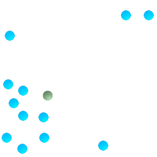
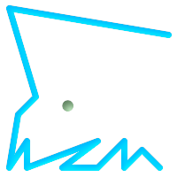
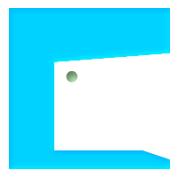

名前
ST_Centroid — ジオメトリの幾何学的重心を返します。
概要
geometry ST_Centroid(geometry g1);
geography ST_Centroid(geography g1, boolean use_spheroid=true);
説明
ジオメトリの幾何学的重心を計算します。[MULTI]POINTに対しては、入力座標の算術平均として計算されます。 [MULTI]LINESTRINGに対しては、各辺の重み付き長さとして計算されます。 [MULTI]POLYGONに対しては、面積から計算されます。空ジオメトリが与えられた場合には、空のGEOMETRYCOLLECTIONが返されます。NULLが与えられた場合には、NULLが返されます。CIRCULARSTRINGまたはCOMPOUNDCURVEが与えられた場合には、まずCurveToLineで直線に変換されてから、LINESTRINGと同じ計算を行います。
入力が混合次元の場合には、結果は最大次元のジオメトリの重心と同じになります (低次元ジオメトリは重心に0の「重み」を与えるためです)。
ポリゴンジオメトリに対しては、重心は必ずしもポリゴンの内部にあるわけではないことに注意して下さい。たとえば、下図のCの形のポリゴンの重心をご覧下さい。ポリゴン内部にポイントがあることを保障するにはST_PointOnSurfaceを使います。
New in 2.3.0 : CIRCULARSTRINGとCOMPOUNDCURVEに対応するようになりました (CurveToLineを使います)。
Availability: 2.4.0 ジオグラフィが導入されました。
 This method implements the OGC Simple Features
Implementation Specification for SQL 1.1.
This method implements the OGC Simple Features
Implementation Specification for SQL 1.1.
This method implements the SQL/MM specification. SQL-MM 3: 8.1.4, 9.5.5
例
次に示す図では、緑点が入力ジオメトリの重心です。

| 
|

|
|
SELECT ST_AsText(ST_Centroid('MULTIPOINT ( -1 0, -1 2, -1 3, -1 4, -1 7, 0 1, 0 3, 1 1, 2 0, 6 0, 7 8, 9 8, 10 6 )'));
st_astext
------------------------------------------
POINT(2.30769230769231 3.30769230769231)
(1 row)
SELECT ST_AsText(ST_centroid(g))
FROM ST_GeomFromText('CIRCULARSTRING(0 2, -1 1,0 0, 0.5 0, 1 0, 2 1, 1 2, 0.5 2, 0 2)') AS g ;
------------------------------------------
POINT(0.5 1)
SELECT ST_AsText(ST_centroid(g))
FROM ST_GeomFromText('COMPOUNDCURVE(CIRCULARSTRING(0 2, -1 1,0 0),(0 0, 0.5 0, 1 0),CIRCULARSTRING( 1 0, 2 1, 1 2),(1 2, 0.5 2, 0 2))' ) AS g;
------------------------------------------
POINT(0.5 1)